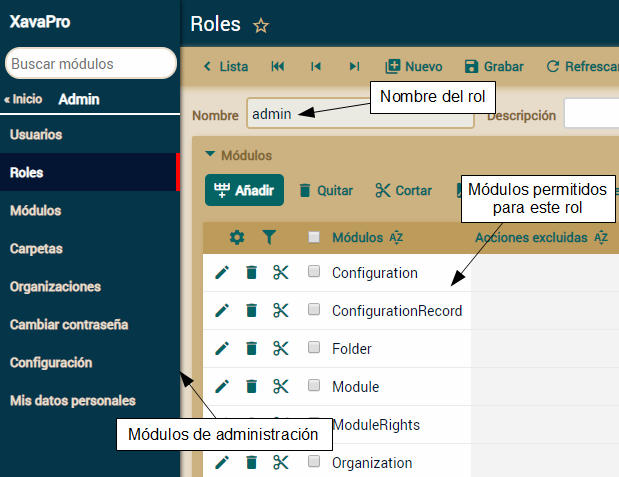
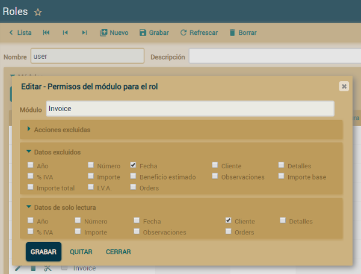
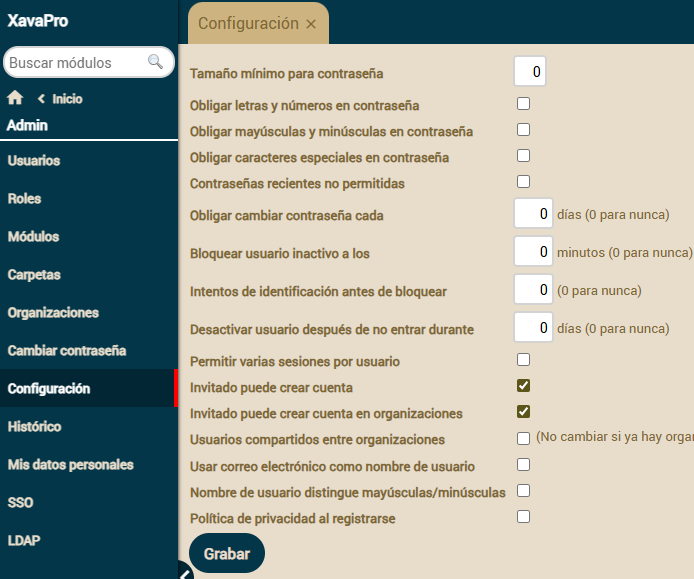
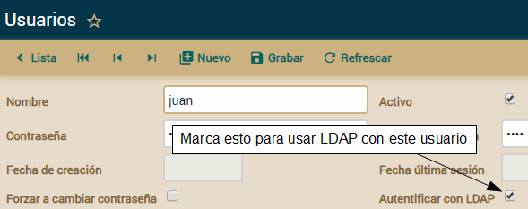
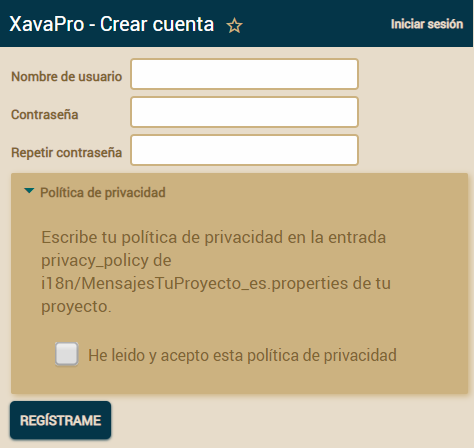
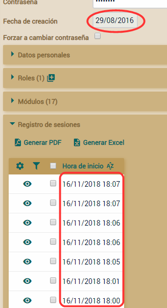
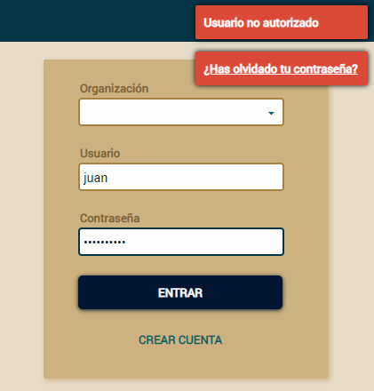
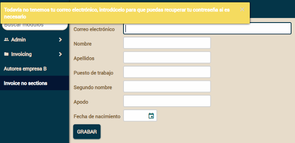

Seguridad y gestión de usuarios
Tabla de contenidos
Gestión de usuarios
XavaPro añade los módulos Roles, Módulos y Usuarios a tu aplicación, en una carpeta llamada Admin. Estos módulos te permiten configurar los niveles de acceso para los diferentes tipos de usuarios.
Lo normal es crear un nuevo rol y asignarle algunos módulos. Entonces, en el módulo Usuarios, puedes escoger un usuario y asignarle el nuevo rol. Por defecto hay dos roles ya creados: admin con acceso a Usuarios, Roles, Módulos y Carpetas, y user con acceso a todos los módulos de tu aplicación. Los módulos nuevos no se añaden automáticamente al rol user (ni ningún otro rol), por lo que has de añadir los nuevos módulos explícitamente al rol user (o cualquier otro rol) usando el módulo Roles.
Si quitas el acceso al módulo por defecto de una entidad, modificar y crear desde las referencias a esa entidad no estará disponible. Por ejemplo, si los usuarios de cierto rol no pueden acceder al módulo Cliente, tampoco podrán crear y modificar clientes desde el módulo Factura (nuevo en v5.3).
Esta gestión de usuarios está disponible sólo en XavaPro, con el OpenXava normal tienes que añadir los usuarios en el fichero naviox-users.properties. de la carpeta properties de tu proyecto.
Restringir el acceso a ciertas acciones
Si quieres que los usuarios de un determinado rol no pueda ejecutar algunas acciones, ve al módulo Roles y escoge ese rol para editarlo en modo detalle. Ahora haz click en el módulo donde quieras restringir las acciones. Te aparecerá un diálogo como este:
Selecciona las acciones que quieras excluir y pulsar Grabar. A partir de ahora, todos los usuario de ese rol no podrán ejecutar esas acciones en ese módulo.
Restringir el acceso a Nuevo y Grabar también restringe la posibilidad de crear y modificar desde las referencias, si se hace en el módulo por defecto para esa entidad. Por ejemplo, si restringes el acceso a la acción Grabar en el módulo Cliente, el usuario no podrá modificar los datos de Cliente desde el módulo Factura (nuevo en v5.3).
Restringir el acceso a acciones sólo está disponible en XavaPro.
Restringir el acceso a ciertas propiedades, referencias o colecciones (nuevo en v5.5)
Si quieres que los usuarios de un determinado rol no pueda acceder a ciertas propiedades, referencias o colecciones, ve al módulo Roles y escoge ese rol para editarlo en modo detalle. Ahora haz click en el módulo donde quieras restringir el acceso a los miembros. Te aparecerá un diálogo como este:
Selecciona los miembros en Datos excluidos que quieras excluir y pulsar Grabar. A partir de ahora, todos los usuario de ese rol no podrán acceder a esos miembros. Fíjate que también tenemos Datos de solo lectura para marcar miembros que los usuarios del rol podrán leer pero no modificar.
Restringir el acceso a miembros sólo está disponible en XavaPro.
Ocultar un módulo en el menú sin restringirlo (nuevo en v6.5)
Si quieres que un módulo no se muestre en el menú para los usuarios de ciertos roles pero que al mismo tiempo ese módulo sea accesible por esos usuarios, tecleando la URL en el navegador, por ejemplo. Ve al módulo Roles y escoge el rol que quieras editar en modo detalle, una vez allí pulsa en el módulo que quieras ocultar en el menú y un diálogo como el siguiente aparecerá:
Marca la opción No en el menú y pulsa en Grabar. A partir de ahora, todos los usuario de ese rol no verán el módulo, Customer en nuestro ejemplo, en el menú de la izquierda, sin embargo, seguirá estando disponible, por lo que si el usuario va a http://tusitio.com/TuAplicacion/m/Customer con su navegador el módulo funcionará.
Ocultar módulos en el menú sólo está disponible en XavaPro.
Políticas para usuarios y contraseñas
Hay un montón de opciones para configurar las políticas de gestión de usuarios y contraseñas. En la carpeta Admin encontrarás un módulo Configuración:
Puedes configurar estas políticas para que tu sistema sea compatible con PCI-DSS, algo muy útil en aplicaciones bancarias.
Estas políticas para usuarios y contraseñas sólo están disponible en XavaPro.
LDAP
XavaPro permite a los usuarios ser autentificados vía LDAP. Para configurar LDAP edita el archivo naviox.properties y añade las siguientes entradas:# Configuración LDAP ldapHost=192.168.0.0 ldapDomain=XX ldapDN=DC=XX,DC=XX,DC=XX ldapPort=389Si usas OpenLDAP omite la entrada ldapDomain (a partir de v5.9.1), como en este ejemplo:
# Ejemplo de configuración OpenLDAP ldapHost=192.168.2.xxx ldapDomain= ldapDN=ou=people,dc=dgrtdf,dc=gov,dc=ar ldapPort=389Fíjate como ldapDomain no tiene valor.
Por defecto todos los usuarios son autentificados usando las contraseñas almacenadas por XavaPro. Para activar LDAP has de seleccionar los usuarios y marcar la opción Autentificar con LDAP:

El soporte de LDAP sólo están disponible en XavaPro.
Invitado puede crearse una cuenta de usuario él mismo
En la caja de identificación hay un vínculo etiquetado como CREAR CUENTA:
El usuario puede pulsar en él para ir a un formulario de registro:

Después de rellenar el formulario y pulsar el botón la cuenta de usuario se crea y además se inicia la sesión. Hay un rol self sign up para determinar los permisos de los usuarios autocreados.
Esta característica se puede desactivar en el módulo de configuración.
A partir de la v6.0 se puede mostrar una política de privacidad en la página de registro, el texto de la política de privacidad se obtiene de la entrada privacy_policy en los archivos de mensajes i18n. Es obligatorio que el usuario marque la casilla aceptando la política para poder hacer el registro. La fecha de la aceptación de la política se almacena junto con los datos del usuario. Puedes ocultar la política de privacidad usando el módulo de configuración.
Fecha de creación de usuario y registro de inicios de sesión
Ve al módulo de usuarios para ver esta información:
Recuperación de contraseña (nuevo en v5.7)
El usuario puede recuperar su contraseña por sí mismo. Cuando falla al introducir la contraseña correcta se muestra un mensaje "¿Has olvidado tu contraseña?" con un vínculo:
Cuando el usuario pulsa en el vínculo va a una página para introducir su correo electrónico:

Después de pulsar en el botón "Recuperar contraseña" un correo electrónico con instrucciones para recuperar la contraseña es enviado. Por supuesto, un usuario con ese correo electrónico ha de estar registrado en el sistema.
Para usar la funcionalidad de recuperación de contraseña has de configurar las propiedades de correo electrónico en xava.properties, algo como esto:
#SMTP related information smtpHost=smtp.gmail.com smtpPort=587 smtpUserId=micorreo@gmail.com smtpUserPassword=micontrasena smtpHostTrusted=true smtpStartTLSEnable=true
Se le pide al usuario su correo electrónico
Para que este mecanismo de recuperación de contraseña funcione es necesario que cada usuario tenga su correo electrónico registrado en el sistema. Por tanto ahora si el usuario no tiene correo electrónico XavaPro se lo pregunta después de entrar:
Introducir el correo no es obligatorio, el usuario puede irse a cualquier otro módulo dejando el correo electrónico en blanco.
Este nuevo módulo "Mis datos personales" esta siempre disponible para que todos los usuarios puedan modificar sus propios datos personales.